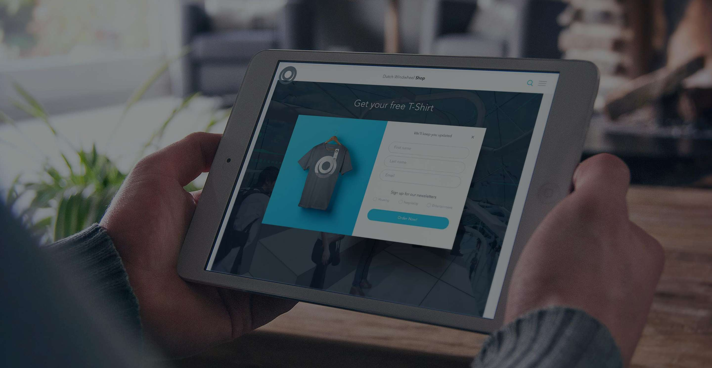

Shopping is emotion, and this truth applies to online shopping too.
In recent years, the profession of ‘e-commerce’ has matured at breakneck speed. We have agreed on all sorts of conventions serving to provide visitors with an optimally uniform shopping experience. Thing is, uniformity breeds boredom eventually. The days when we still had to learn how to trust and deal with online shopping are behind us now. By now, every guest entering your store knows how to add articles to a basket, and is familiar with the ensuing trajectory of transactions leading up to actually receiving your purchase on your doorstep.
Conversion VS Experience
By now, we have spent quite a bit of work on webstores ourselves, more about which will soon follow in our portfolio. Essentially, our principals keep approaching us with the same desires and wishes. They prefer not to use standard templates like those seen in Magento web shops; adjust logo, adjust stylesheet: all done. Instead, they want a web shop where visitors get inspired, fostering emotional attachment to the brand and its associated product range.
Without losing sight of conversion, we stretch the limits of what we can do to catch visitors by surprise: it’s never just conversion for us. A significant share of our brainwork is spent on designing user experience. We believe that ultimately, this is what stimulates visitors, thereby boosting brand preference and willingness to buy. This is particularly true in e-commerce landscapes where form is chiefly determined by conversion, resulting in a bland environment where everything resembles everything else.
So the Web leaves room for improvement
As the web keeps on developing, technology becomes self-evident, which fortunately opens up space for the experience of users. Of course, the importance of qualitative coding and frameworks is not to be underestimated, and as such, they deserve their share of time and attention. Nonetheless, visitor should not have to get annoyed by technical details. Things should just work. Good technology is no doubt essential, but it is gradually becoming less of a decisive factor.
Conversion and experience; have your cake and eat it
Most websites are directed at conversion, thereby meeting all the online conventions we have established. And this works fine in itself. Still, online competition keeps on growing more severe, so distinguishing factors must be found elsewhere.
This is where the ever-important user experience comes into play. Sure, your website has to be traceable and conversion can always be improved, but the feeling projected by your site is becoming increasingly important. Consumers show a growing need for information, and persuasive design has demonstrated that people can be influenced, as well as proving that free will is a myth. Paying some extra attention to visitors and providing relevant content offers an alternative means of finding distinguishing potential. It is highly likely that this added value (narrative, service, social value, positive experience, etc.) will grow into a dominant force over the next few years. This implies that user experience – and with it, brand experience – will increasingly become forces to be reckoned with.


- Jonathan Reijneveld
- Journal /
Sketch Plugins That Will Make Your Life Easier
Sketch has become a important part of our workflow, for our designers as well as our coders.
Read more